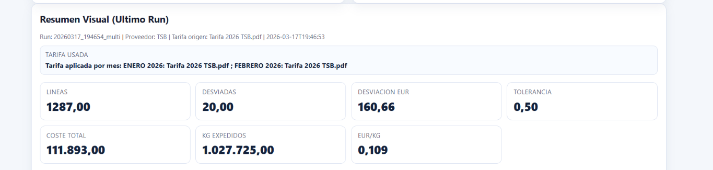

In many companies, transport invoices contain all the information needed to review costs properly, but that information is not always presented in a way that enables fast, homogeneous and management-useful validation. Invoices arrive, are posted, are paid and, in many cases, are only reviewed in detail when an obvious deviation or a specific incident appears. The problem is that there is a considerable distance between having the invoices and having a clear control criterion. That is precisely where this project focuses: on turning the review of transport invoices into a more structured, more agile and more useful process for detecting real discrepancies.
The need arose from something very practical. Reviewing a transport invoice is not just about looking at amounts, but about checking them against a specific tariff logic: shipments, destinations, weights, surcharges, agreed conditions and other particularities that can change the final result. On paper, all that information exists. In practice, checking it manually requires time, attention and a strong understanding of how each tariff should be applied. When volume grows, the process no longer scales well and the chance increases that small deviations go unnoticed.
From that need, the project took a double approach. On the one hand, the information had to be structured properly in order to compare what was invoiced with what should actually apply. On the other hand, the complexity of the tariffs had to be translated into a review tool that is genuinely useful for the business. The idea was not only to know whether an invoice looks correct, but to detect where differences appear, which cases deserve review and where it is worth going into more detail. The tool was designed with exactly that logic: reduce mechanical work, gain analytical capacity and make the review more consistent.
The person carrying out the review can now rely on a more direct comparison between the invoice and the expected tariff, identify discrepancies more quickly and focus effort on the cases that really require it. The goal is not to replace professional judgment, but to prepare it better: spend less time checking the obvious and more time interpreting what truly needs review.
Without wanting to give unnecessary prominence to an internal tool, I would like to share a few reflections this development has left me with.
Every improvement starts from a real need.
In my case, the tool was born from a very concrete day-to-day problem: reviewing transport invoices in enough detail without turning that task into a process that is too slow or too dependent on the knowledge of only a few people.
Professionalizing in a scalable way.
For me, the value of this tool does not lie in doing something completely new, but in enabling a task that was already necessary to be done better, more homogeneously and with greater reach. The point is not to replace anyone, but to facilitate a task which, when done only manually, consumes too much time and makes it difficult to maintain a constant criterion.
Speed in the service of judgment.
What remains essential is understanding the business, the tariffs and the meaning of each validation. Technology does not decide by itself whether an incident is relevant or what action should be taken. What it does do is prepare the ground much better for decision-making by highlighting differences, organizing information and helping focus the review where it really matters.
Ultimately, for me the value is not only in checking invoices faster, but in turning that checking into a clearer, more traceable and more useful process for cost control. That is where I believe a tool like this can genuinely contribute: not by replacing judgment, but by helping apply it better.
General execution view and monthly analysis
Visual summary of the latest run
